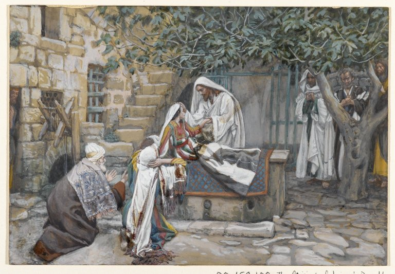

Lucas 8 — La Traducción Mister

⚠ Tissot pinta el único detalle que Lucas, solo entre los tres Evangelios, conserva. Los tres sinópticos tienen a Jesús tomando la mano de la niña; solo Lucas añade que lo hizo ‘tomándola de la mano’ en el mismo aliento en que la llama, y que su espíritu VOLVIÓ (epestrepsen) —el vocabulario del cuerpo como algo de lo que la vida realmente había salido. El gesto tranquilo, casi clínico, del cuadro —una mano simplemente tomada, sin ningún floreo dramático— encaja con un capítulo que las propias notas de esta traducción siguen precisamente por esa contención. Jairo está arrodillado a la izquierda, no de pie sobre la escena que él mismo suplicó.
_-_James_Tissot_-_overall.jpg){kind=link}
Notas del traductor — versículo por versículo
Cada nota explica la decisión de esta traducción y compara las versiones del estante. Las citas de versiones con derechos de autor (NVI, TNM) se limitan a frases breves para la comparación; la RV60 y la RV 1909 son de dominio público.
⭐⭐⭐ Nombradas, y financiándolo. Ningún otro Evangelio abre un capítulo con una frase así. Lucas nombra a tres mujeres —María Magdalena, Juana, Susana— y «muchas otras», y dice sin rodeos qué hacían: diēkonoun, los sostenían, ek tōn hyparchontōn autais, «con sus propios bienes». Nada aquí dice que cocinaran o sirvieran la mesa, la suposición habitual detrás de «les servían»; la frase habla de dinero y propiedad, no de trabajo doméstico. La RV60 lee «le servían de sus bienes» (siguiendo un texto que nombra solo a Jesús); la TNM corrige a «les ministraban», siguiendo el texto más antiguo aquí seguido; la NVI lo explicita del todo, «los ayudaban con sus propios recursos».
⭐⭐ Juana, desde dentro de la casa de Herodes. Su esposo Cuza es epitropos, mayordomo o administrador, de Herodes Antipas —el mismo tetrarca recién presentado teniendo preso a Juan el Bautista (3:19–20) y que dentro de un capítulo preguntará «¿quién es este?» sobre Jesús (9:9). Una mujer casada en esa casa financia ahora el ministerio del hombre sobre quien Herodes está oyendo rumores. Lucas es el único Evangelio que la nombra, y vuelve a nombrarla en el sepulcro vacío (24:10, ya en estas páginas) —la única persona, además de María Magdalena, que esta lista y aquella comparten.
⚠⚠ «Siete demonios» — dicho, no explicado, y nunca llamado pecado. Lucas dice solo que siete demonios habían salido de María; no da causa alguna ni le atribuye vergüenza, a diferencia de la «pecadora» sin nombre del capítulo anterior, con quien nada en el texto la identifica (véase la nota de 7:36 y la entrada de la enciclopedia sobre la homilía del siglo sexto que fundió a las dos mujeres). La RV 1909 lee «de la cual habían salido siete demonios», y la RV60 el mismo dato con un pronombre distinto, «de la que habían salido siete demonios».
El único detalle que Lucas omite. Mateo y Marcos gradúan la tierra buena en tres niveles, «unas a ciento, otras a sesenta y otras a treinta» (Mateo 13:8). Lucas conserva solo la cifra máxima. Si es compresión o un énfasis distinto —un solo estándar de fructificación en vez de tres— el texto no lo dice; el efecto es un final más plano y más absoluto para la parábola.
⭐ La parábola desnuda, sin interpretación todavía. Jesús la cuenta sin comentario alguno más allá del llamado final a escuchar (v8), exactamente como en Mateo 13:9 y Marcos 4:9. La explicación que sigue (vv11–15) no se da a la multitud que oyó la parábola; se da solo a los discípulos, una vez que la multitud ya no está a la vista —la misma asimetría de la que trata la nota siguiente.
⚠ La pregunta supone que las parábolas ocultan, no que ilustran. La nota de Mateo 13 hace el mismo señalamiento con más detalle: un lector moderno espera que una parábola facilite una verdad difícil; la respuesta de Jesús confirma la suposición contraria en vez de corregirla. A los discípulos se les da conocer los misterios del reino; para los demás, la parábola es la forma misma de la enseñanza, precisamente para que viendo no vean.
⭐⭐ Cuatro tierras, una semilla, un solo intérprete. La parábola trae su propia lectura, verso a verso: el camino es una palabra robada (v12), la roca una de vida corta (v13), los espinos una ahogada (v14), y la tierra buena la palabra que se retiene y da fruto con perseverancia —hypomonē, una palabra de tiempo y presión, no de un solo instante de fe. Lucas, único entre los tres relatos sinópticos, añade «con corazón noble y bueno» a la cuarta tierra, una descripción que ni Mateo ni Marcos incluyen.
⚠ «Crean y se salven» — la primera de cuatro veces que este capítulo usa la palabra. Sōzō está en el v12 (la palabra arrebatada «para que no crean y se salven»), y regresa en el v36, el v48 y el v50, pasando de una abstracción en una parábola a tres cuerpos concretos: un endemoniado, una mujer que sangraba, una niña muerta. Esta traducción conserva «salvado/a» en cada aparición, en vez de variarlo con «sanado» o «curado», para que el hilo se vea en español igual que en griego.
⭐ El mismo dicho, trasladado. Mateo coloca esta imagen dentro del Sermón del Monte, dicha de los propios discípulos («ustedes son la luz del mundo», Mateo 5:14–15); el propio Sermón del Llano de Lucas no la incluye. Aquí sigue directamente a la parábola del sembrador, de modo que oír bien (v18) es la bisagra que une ambas imágenes: la palabra recibida es como una luz que no puede quedar escondida una vez que de verdad ha arraigado.
«Lo que cree tener». La advertencia (v18) no apunta a quien no tiene nada; apunta a quien cree tener algo y no lo tiene —la misma lógica de la tierra sobre la roca, que brota pareciendo una planta y luego resulta no tener raíz en absoluto.
⭐⭐ Lucas hace caer esta escena justo tras la moraleja de la parábola. La parábola acaba de decir que la tierra buena es el corazón que oye la palabra y la retiene (v15); Jesús define ahora a su propia familia con la misma prueba, «los que oyen la palabra de Dios y la ponen en práctica» (v21) —akouontes kai poiountes, el oír seguido del hacer, el mismo par de verbos de la parábola. El paralelo de Marcos (Marcos 3:31–35, ya en estas páginas) cuenta el mismo episodio con un filo más duro, abriendo con la familia pensando que Jesús está «fuera de sí»; Lucas conserva solo la redefinición y omite del todo la acusación, el mismo patrón de suavizado ya señalado en 4:16–30 y 6:6–11.
⚠ No es una negación de que sean su familia. Jesús no dice que su madre y sus hermanos NO sean su madre y sus hermanos; responde a un aviso sobre dónde están parados con una afirmación sobre quién más está parado en el mismo lugar. El versículo no contiene ninguna falta de respeto hacia María, a quien ya se le ha dado la bendición más plena que recibe cualquier ser humano en este Evangelio (1:42, 1:48).
⭐⭐ «Maestro, Maestro» — la palabra propia de Lucas, doblada por única vez. Epistata es el título de Lucas, que nunca usan Mateo, Marcos ni Juan, y esta es la única de sus seis apariciones donde se dice dos veces seguidas (compárese el uso sencillo de Pedro dos capítulos antes, 5:5, y su uso sencillo otra vez en el v45). El doblez suena a pánico más que a formalidad.
⭐ «¿Dónde está su fe?» respondido con una pregunta propia. Jesús pregunta por la fe; los discípulos responden con asombro sobre su identidad, «¿quién es este, pues?» —casi la misma pregunta, palabra por palabra, que los invitados del fariseo Simón hicieron en el capítulo anterior sobre otra clase de autoridad, «¿quién es este, que hasta perdona pecados?» (7:49). Ninguna de las dos preguntas se responde en la página donde se hace; ambas esperan a que el lector note que los capítulos se están respondiendo entre sí.
⚠ Una orden dada al clima, no una oración pedida sobre él. Jesús epetimēsen, reprendió, al viento y al agua —el mismo verbo que Lucas usa en otros lugares para silenciar a un demonio (compárese Marcos 1:25 y Lucas 4:35, ya en estas páginas). Al demonio que aparece unos versículos después, en la escena siguiente, no se lo reprende sino que se le ordena salir, parangellō (v29) —una palabra más llana para un encuentro distinto. La RV60 lee «reprendió al viento»; la RV 1909 usa otro verbo, «increpó al viento».
⭐ El mismo nombre de región en disputa que en el relato de Marcos. La entrada de la enciclopedia escrita para este mismo nudo textual en Marcos 5:1 se aplica aquí sin cambios: Gerasa está a unos treinta millas del lago, un ancla extraña para una historia que termina con una piara corriendo cuesta abajo al agua en el mismo versículo, y los manuscritos de los tres sinópticos discrepan entre gerasenos, gadarenos y gergesenos. Esta traducción sigue el testimonio más antiguo, gerasenos, en los dos Evangelios que cuentan esta historia; la RV 1909 y la RV60 leen «gadarenos», siguiendo la tradición posterior.
«No me atormentes» — repetido a los dos lados del lago. La súplica del demonio usa basanizō, el mismo verbo que el centurión usó del sufrimiento de su siervo dos capítulos antes (7:2) —el sufrimiento de un hombre y el pavor de un demonio, nombrados con una sola palabra.
⭐⭐ «Legión» y «el abismo» — una palabra romana y una palabra que reaparece en Apocalipsis. Una legión eran unos cinco o seis mil soldados, la propia unidad de ocupación del imperio, ahora nombrando la multitud dentro de un solo hombre; la entrada del diccionario, escrita para esta misma historia en Marcos, expone todo el peso de la palabra en una provincia con legiones romanas de verdad acantonadas cerca. La súplica de los demonios de no ser enviados «al abismo» usa una palabra que en el resto del Nuevo Testamento pertenece a Apocalipsis, donde el abismo es un pozo sellado que solo se abre con permiso (Apocalipsis 9:1–2, 11; ya en estas páginas) y, más adelante, el lugar de donde sube la bestia (11:7, ya en estas páginas). Sea lo que sea este encierro, los demonios ya conocen su nombre y le temen más que a la muerte.
⚠ La negociación queda extraña, no suavizada. Los espíritus piden quedarse en la región (v31), luego piden entrar en los cerdos (v32) —concedido sin comentario alguno—, y la destrucción de la piara es el resultado inmediato y sin explicar. El texto no dice por qué la segunda petición tiene éxito donde la primera no, ni dice nada sobre los dueños de los cerdos.
⭐⭐ «Salvado», no solo «sanado» — la segunda de las cuatro apariciones del capítulo. Esta traducción lee esōthē (v36) como «salvado», igual que en el v12 y anticipando los vv48 y 50. La mayor parte del estante traduce el sentido y no la palabra aquí: la TNM 1987 lee «cómo se le había devuelto la salud al endemoniado», y su revisión, la TNM 2019, «cómo el endemoniado se había recuperado» —la liberación de un endemoniado descrita con la palabra griega corriente para el rescate del pecado y la muerte, no una palabra especializada de exorcismo.
Miedo a lo que no correspondía. Toda la población le pide a Jesús que se vaya justo cuando el hombre está «vestido y en su sano juicio» (v35) —el momento exacto en que deja de ser peligroso. Lo que los asusta no es el peligro que ya conocían, sino un cambio de naturaleza que no saben explicar; es la única petición de esta escena que Jesús concede sin discutir (v37).
⭐ El único hombre al que se le dice que hable. Todos los demás sanados o liberados en este Evangelio hasta ahora han recibido la orden de callar, o han difundido la noticia contra esa orden (5:14). Aquí, en territorio gentil, sin sinagoga ni multitud, Jesús invierte el patrón a propósito: «vuelve a tu casa, y cuenta todo lo que Dios ha hecho por ti» (v39). El hombre hace exactamente eso —y la última cláusula del versículo cambia en silencio el sujeto, de lo que hizo Dios a lo que hizo Jesús, la misma identificación que todo el capítulo sigue rondando sin decirla del todo.
⭐⭐⭐ «Única» — el segundo de los tres padres que prometió el capítulo anterior. La nota final de Lucas 7 nombró a tres padres cuyo hijo único este Evangelio iba a dar: el hijo único de la viuda de Naín, ya contado; la hija única de Jairo, aquí; y un hijo único todavía por venir (9:38). Jairo es un jefe de la sinagoga, la figura del establecimiento que este Evangelio ha mostrado sobre todo en conflicto con Jesús (6:6–11) —y aquí uno de ellos cae a sus pies.
⭐⭐ Los médicos que ya no podía seguir pagando. El texto aquí seguido conserva el detalle más duro —«había gastado en médicos todo lo que tenía, y no había podido ser sanada por nadie»—, que está en la mayoría de los manuscritos: la RV 1909 y la RV60 lo conservan, igual que el paralelo de Marcos, que añade que en realidad había empeorado bajo su cuidado. Algunos manuscritos tempranos, entre ellos el Códice Vaticano, omiten a los médicos del todo y leen solo «no había podido ser sanada por nadie». Colosenses 4:14 mismo llama a un compañero de Pablo «Lucas, el médico amado» (todavía no en estas páginas) —palabras del propio Nuevo Testamento, no una tradición—; identificar a ese mismo Lucas como el autor de este Evangelio sí es la tradición del siglo segundo, atestiguada por Ireneo y el Fragmento Muratoriano. Si esa identificación explica la lectura más corta en algunas copias, o es solo coincidencia, no puede zanjarse solo con el texto.
⭐⭐ «El borde de su manto» — la misma palabra que usó Mateo para esta idéntica historia. Kraspedon, el fleco mandado en las cuatro esquinas de una prenda (Números 15:38–39, ya en estas páginas), es la palabra que Mateo también usa al contar este mismo encuentro (Mateo 9:20, ya en estas páginas, todavía no en español) —dos relatos evangélicos independientes de la misma mujer tocando el mismo detalle de la ropa, ambos nombrándolo con precisión en vez de conformarse con «su ropa». Ella busca lo que la Ley judía exigía que un maestro llevara puesto, no al hombre mismo.
«Maestro, las multitudes te rodean» — el segundo uso, más llano, del título de Lucas en una sola escena. La objeción de Pedro suena a simple aritmética: todos tocan a Jesús, así que preguntar «quién me tocó» parece absurdo. Jesús insiste igual en la distinción: una multitud que lo aprieta y una mujer que lo toca con fe no son el mismo suceso, aunque ambos impliquen contacto. Dynamis, poder, que sale de él y se percibe más que se ve, es la misma palabra que este Evangelio ya usó para la fuerza en su enseñanza (4:14, 4:36).
⭐⭐⭐ «Hija, tu fe te ha salvado; vete en paz» — exactamente como se prometió. La nota final de Lucas 7 dijo que esta frase exacta volvería «en el capítulo siguiente, con ‘Hija’ delante, a otra mujer» —y aquí está, palabra por palabra, dicha esta vez a una mujer cuya fe acaba de actuar en vez de solo ser nombrada. La frase es una promesa cumplida dos veces en dos capítulos: una vez a una mujer conocida públicamente como pecadora, otra a una mujer cuya única falta era una enfermedad que la Ley hacía ritualmente aislante (Levítico 15:25–27, ya en estas páginas). Las dos veces, «salvado» es el único sentido que la frase puede llevar.
⚠ «No ha muerto, sino que duerme» — dicho a unos que tenían razón. Los plañideros «se burlaban de él, sabiendo que había muerto» (v53); Lucas no corrige sus hechos, solo la afirmación de Jesús sobre lo que su muerte significa ahora en su presencia. El mismo lenguaje del sueño para la muerte reaparece en otro lugar del Nuevo Testamento (compárese Juan 11:11–14, todavía no en estas páginas, donde Jesús hace la misma distinción y luego dice llanamente lo que quiere decir).
⭐⭐ «Niña, levántate» — la palabra que una vez nombró a un esclavo, ahora una niña moribunda. Pais nombró al siervo del centurión dos capítulos antes («mi muchacho», 7:7) y nombra a un hijo único dentro de un capítulo (9:38); aquí, en su forma femenina, nombra a la hija de Jairo. Un solo sustantivo griego, tres personas distintas, sin necesidad de una palabra aparte para «niña». El paralelo de Marcos conserva el arameo real que dijo Jesús, Talita cum (Marcos 5:41, ya en estas páginas); Lucas da solo el griego, egeire, el mismo verbo de «levantarse» que esta traducción mantuvo fijo en las tres apariciones del capítulo anterior (7:14, 16, 22) y ahora extiende a una cuarta.
«Su espíritu volvió» — el detalle que solo Lucas cuenta. Ni Marcos ni el paralelo de Mateo dicen nada sobre el pneuma de la niña en el momento de levantarse; solo Lucas afirma que «volvió», tratando su muerte como real y no como un sueño profundo mal diagnosticado —la misma seriedad que este Evangelio le dio al hijo de la viuda de Naín, donde el muerto simplemente «se incorporó y comenzó a hablar» sin una cláusula comparable (7:15). La instrucción de darle de comer, la nota final casi cómica, es el mismo instinto que cierra la calma de la tormenta sin nada más dramático que una pregunta sobre la fe: el milagro termina, y la vida sigue al nivel de un estómago vacío.
Patrones que vale la pena continuar
Donde esta traducción mantiene las palabras exactas / distintas: salvado/a para cada aparición de sōzō en este capítulo (vv12, 36, 48, 50), nunca variado a «sanado» o «curado»; Maestro para Epistata, el título propio de Lucas (vv24, 45); atormentar para basanizō, uniendo la súplica del demonio al sufrimiento del siervo del centurión (7:2; 8:28); borde para kraspedon, la misma palabra que usa Mateo para esta idéntica historia; levantarse para egeirō, extendido de las tres apariciones del capítulo anterior a una cuarta (8:54); única para monogenēs; y misterios para mystēria.
Ecos pagados. Las dos promesas del cierre de Lucas 7 se cumplen aquí: monogenēs vuelve para la hija única de Jairo (v42), y «tu fe te ha salvado; vete en paz», con «Hija» delante, se dice a una segunda mujer (v48). La pregunta sin responder de los invitados del fariseo, «¿quién es este, que hasta perdona pecados?» (7:49), se repite en el «¿quién es este, pues?» de los discípulos (v25) —preguntada del mismo hombre, sobre otra clase de autoridad, y dejada igual de sin responder. Y basanizō, sembrado en 7:2 para un siervo que sufre, vuelve para un demonio que sufre (v28).
Ecos sembrados. A monogenēs le quedaba una aparición más: un hijo único (9:38). Pais nombra a ese mismo hijo. El «¿quién es este, pues?» de los discípulos (v25) es la primera de una serie de preguntas sobre la identidad de Jesús que este Evangelio sigue haciendo: Herodes pregunta una versión de ella sobre los rumores que le llegan (9:9), y Jesús mismo se la hace a los Doce, sobre lo que dice la gente y lo que dicen ellos (9:18–20) —tres capítulos, la misma pregunta, hecha por un círculo cada vez más amplio. Y el lenguaje del sueño para la muerte del v52 volverá a aparecer, en otro lugar del Nuevo Testamento, para la misma distinción entre morir y solo dormir.
A continuación: Lucas 9 — los Doce enviados sin nada para el camino; cinco panes y dos peces para una multitud de miles; la propia respuesta de Pedro a «¿quién dicen ustedes que soy yo?»; y un monte donde Moisés y Elías aparecen junto a un Jesús que de repente resplandece.